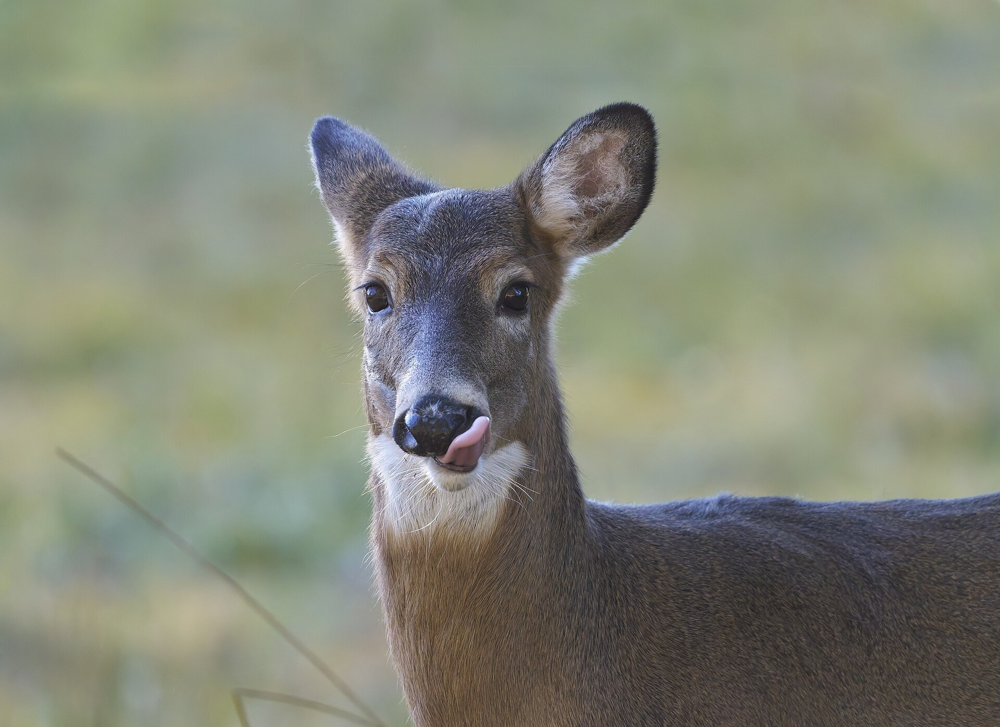

1. Inspection
Attic, roofline and foundation checked, entry points photographed. Written scope and price first.
Humane removal and exclusion / Upstate New York
Raccoons in the attic, bats in the roofline, a skunk under the porch. This service matches you with a local licensed operator who evicts animals humanely, seals the entry points, and cleans up after them. Published prices, plain process, no poison.
Request an inspectionThis pilot is built on records, not guesses. Observers have logged 18,947 research-grade mammal observations within 25 km of the ten town centres on iNaturalist, and GBIF holds 82,948 further mammal occurrence records for the same ground. Every one of the eight handled animals, raccoons, bats, squirrels, skunks, groundhogs, opossums, mice and chimney swifts, is confirmed in the local record in eight of the ten towns. The exceptions are Utica and Watertown, where observer coverage is thin and the chimney swift is the one species not yet recorded.


Not sure what is in your attic? Work through the sounds, signs and droppings on What animal is in my attic?, the diagnostic tool built from this data.
Data: iNaturalist research-grade observations (25 km radius), GBIF, US Census ACS 2024, Open-Meteo — fetched November 2026. Every photograph on this site is credited on the photo credits page.
This is a wildlife service, not a pest control subscription. Nobody sprays anything. The work is physical: find entry points, evict the animal with one-way doors or live catch methods, seal the building with chew-proof materials, and clean the attic. That is why the fix holds.
Towns in this pilot were picked because local coverage is thin. Each town page here carries its own housing, water and seasonal notes, not a swapped town name.
The animals handled most often are raccoons, bats, grey and flying squirrels, skunks, opossums and groundhogs, plus mice in attics and birds in chimneys or vents. Method differs by species, so the inspection identifies yours first. Porch and ground animals are often handled during the same visit.
Sound and hour together name the animal in most homes. Heavy thumping after dark points to a raccoon. Scratching at dawn fits grey squirrels. Light pitter patter after dark fits flying squirrels or mice, and fluttering at dusk fits bats. An inspection confirms it with droppings, tracks and the entry point.
Tompkins County, near Cayuga Lake and the gorges.
Broome County, near the Susquehanna and Chenango river confluence.
Dutchess County, near the Hudson River.
Ulster County, near the Rondout Creek waterfront and the Hudson River.
Orange County, near the Hudson River waterfront.
Oneida County, near the Mohawk Valley.
Saratoga County, near the mineral springs and wooded neighborhoods.
Jefferson County, near the Black River and Lake Ontario snow belt.
Cayuga County, near Owasco Lake in the Finger Lakes.
Chemung County, near the Chemung River valley and wooded hills.
This pilot covers ten upstate New York towns: Ithaca, Binghamton, Poughkeepsie, Kingston, Newburgh, Utica, Saratoga Springs, Watertown, Auburn and Elmira. Each town has its own page with local housing notes, seasonal timing and typical costs. The service is a matching service, so your job is handled by a local licensed operator.
Start with sound and timing: a noise at 2 a.m. rules out grey squirrels, daytime animals, and a noise at breakfast rules out raccoons.

| Sound | When | Likely animal | What it means |
|---|---|---|---|
| Heavy thumping, slow walking | After dark | Raccoon | Spring noise often means kits too. |
| Scratching, nuts rolling | Dawn and late afternoon | Grey squirrel | Check eaves and soffits. |
| Light pitter patter, very fast | After dark only | Flying squirrel or mice | Droppings size settles which one. |
| Fluttering, faint scratching | Dusk and dawn | Bats | Look for guano below a roofline gap. |
| Gnawing that stops and starts | Night, in walls | Mice or rats | Fixed paths. Wiring is the risk. |
| Chattering, crying young | Night, spring | Raccoon family | Do not seal. Young check first. |
Not sure what you are hearing? The attic diagnostic hub pairs sounds with droppings and signs. The droppings and health risks guide covers what to leave alone until a professional arrives.
Order matters. Seal too early and an animal can be trapped in a wall. Skip the seal and the next animal uses the same hole.

Attic, roofline and foundation checked, entry points photographed. Written scope and price first.
One-way doors let animals leave and not return; ground animals are live caught. No poison.
Every gap closed with chew-proof metal, mesh or flashing. Chimneys capped, vents screened.
Droppings come out, the space disinfected, damaged insulation flagged.
No poison is used for attic wildlife on jobs arranged through this site. Poisoned animals die in wall voids, where they smell for weeks and draw flies. Humane eviction with one-way doors, followed by sealing, removes the animal and closes its route in. Ask any operator who suggests poison how a dead animal leaves the wall.
Entry points are sealed on every job, because removal alone does not last. The animal used a gap at the roofline, a vent or the foundation, and the next animal will find it. Sealing with chew-proof materials ends the cycle. Ask for the seal list in writing before work starts.
Timing is law for bats in New York: exclusion pauses in two blackout windows, May 1 to August 15, when flightless pups are in the roost, and October 1 to March 31, when colonies hibernate. Raccoon kits arrive March to June, so spring jobs start with a young check.

Bats cannot be excluded in New York during the blackout windows, May 1 to August 15 and October 1 to March 31, because flightless pups cannot leave the roost. Sealing them in is cruel and against state guidance. Inspections still run, and exclusion is booked for the day the window opens.
| Service | Typical range | What it covers |
|---|---|---|
| Inspection and entry point survey | $150-$300 | Roofline, attic and foundation checked. Often credited toward the work when you go ahead. |
| Single animal humane removal | $300-$600 | One animal, a clear entry point, normal access. |
| Bat exclusion, full home | $800-$2,500 | One-way valves, full seal, guano check. Colony size drives the range. |
| Attic cleanup and disinfection | Quoted after inspection | Depends on droppings volume and insulation condition. |
Quotes vary for honest reasons: roof access, the number of entry points, young in the space, and how much droppings or damaged insulation has to come out. The full cost guide breaks each line down by animal, and the insurance guide explains the line between removal, which policies rarely cover, and damage repair, which they sometimes do.
Wildlife removal in upstate New York most often starts with a $150-$300 inspection, and a single animal removal usually runs $300-$600. Bat exclusion for a full home runs $800-$2,500, while attic cleanup is quoted after inspection. Access, entry points, young and contamination move the final price. The inspection fee is often credited toward the work when you go ahead.
Yes, cleanup is offered after removal and sealing, and it is quoted after inspection. Bat guano and raccoon droppings are removed with protective gear, the space is disinfected, and soiled insulation is flagged. Heavy contamination should never be swept up dry by a homeowner. The quote lists removal, disinfection and insulation work as separate lines.
Most attic animals do not leave on their own, because the attic gives them warmth, shelter and safety for young. Squirrels return to the same dens, and bat colonies to the same roost each year. Eviction plus sealing changes the pattern. It also protects the next owner or tenant, because the den site is closed for good.
Animals rarely need a big hole: bats pass a 3/8 inch gap, mice a quarter inch.

Attics and chimneys. Loud, hard on insulation.
Raccoon removal guide.Attic colonies and guano. NY blackout dates set the timing.
Bat removal guide.Eaves, soffits and chewed wiring. Daytime animals.
Squirrel removal guide.Porch and deck dens. Calm handling lowers spray risk.
Skunk removal guide.Burrows under sheds. Gardens take damage too.
Groundhog removal guide.Crawl spaces and garages. Quiet and shy.
Opossum removal guide.Light night scurrying. Sealing beats traps.
Mice in the attic removal guide.Nests in flues and vents. Caps stop repeats.
Birds in the chimney removal guide.Urgent cases have their own pages: emergency wildlife removal, a bat in the bedroom, and dead animal removal. Attic damage is covered in the chewed wiring guide and the damaged insulation guide.
You send the form. A local licensed operator calls you back, inspects, and quotes in writing. This site publishes the price ranges, process and operator checks on the verify page. Special cases are covered too: second homes, landlords and short term rental hosts.
Wildlife work in New York should be done by a licensed nuisance wildlife control operator, called an NWCO. Ask for the licence, insurance, and who does the work. This site matches homeowners with local operators, and its verify page lists the checks. A real operator shows the licence without being asked twice about it.
Yes, humane methods are the standard on every job here. Animals leave through one-way doors or are live caught with low stress handling. Poison, glue boards and lethal traps are not used. Young are reunited with their mother outside before the seal goes on. You can ask which device will be used before anyone starts work.
Keep people and pets out of the attic and do not block the hole you think the raccoon used, because kits may be inside the space. Note when the noise starts and where it sounds loudest, since that detail speeds up the inspection. Then book an inspection. A spring raccoon almost always means a mother with young.
Tell us what you are hearing or seeing, and when it started. Sound and timing notes help identify the animal. You get a callback and a written scope before work begins.
Draft note: form endpoint and call tracking number are added at launch. No number is published here.
Wildlife removal in upstate New York most often starts with a $150-$300 inspection, and a single animal removal usually runs $300-$600. Bat exclusion for a full home runs $800-$2,500, while attic cleanup is quoted after inspection. Access, entry points, young and contamination move the final price. The inspection fee is often credited toward the work when you go ahead.
No poison is used for attic wildlife on jobs arranged through this site. Poisoned animals die in wall voids, where they smell for weeks and draw flies. Humane eviction with one-way doors, followed by sealing, removes the animal and closes its route in. Ask any operator who suggests poison how a dead animal leaves the wall.
Entry points are sealed on every job, because removal alone does not last. The animal used a gap at the roofline, a vent or the foundation, and the next animal will find it. Sealing with chew-proof materials ends the cycle. Ask for the seal list in writing before work starts.
Yes, cleanup is offered after removal and sealing, and it is quoted after inspection. Bat guano and raccoon droppings are removed with protective gear, the space is disinfected, and soiled insulation is flagged. Heavy contamination should never be swept up dry by a homeowner. The quote lists removal, disinfection and insulation work as separate lines.
Wildlife work in New York should be done by a licensed nuisance wildlife control operator, called an NWCO. Ask for the licence, insurance, and who does the work. This site matches homeowners with local operators, and its verify page lists the checks. A real operator shows the licence without being asked twice about it.
The animals handled most often are raccoons, bats, grey and flying squirrels, skunks, opossums and groundhogs, plus mice in attics and birds in chimneys or vents. Method differs by species, so the inspection identifies yours first. Porch and ground animals are often handled during the same visit.
Yes, humane methods are the standard on every job here. Animals leave through one-way doors or are live caught with low stress handling. Poison, glue boards and lethal traps are not used. Young are reunited with their mother outside before the seal goes on. You can ask which device will be used before anyone starts work.
Keep people and pets out of the attic and do not block the hole you think the raccoon used, because kits may be inside the space. Note when the noise starts and where it sounds loudest, since that detail speeds up the inspection. Then book an inspection. A spring raccoon almost always means a mother with young.
Bats cannot be excluded in New York during the blackout windows, May 1 to August 15 and October 1 to March 31, because flightless pups cannot leave the roost. Sealing them in is cruel and against state guidance. Inspections still run, and exclusion is booked for the day the window opens.
Sound and hour together name the animal in most homes. Heavy thumping after dark points to a raccoon. Scratching at dawn fits grey squirrels. Light pitter patter after dark fits flying squirrels or mice, and fluttering at dusk fits bats. An inspection confirms it with droppings, tracks and the entry point.
Most attic animals do not leave on their own, because the attic gives them warmth, shelter and safety for young. Squirrels return to the same dens, and bat colonies to the same roost each year. Eviction plus sealing changes the pattern. It also protects the next owner or tenant, because the den site is closed for good.
This pilot covers ten upstate New York towns: Ithaca, Binghamton, Poughkeepsie, Kingston, Newburgh, Utica, Saratoga Springs, Watertown, Auburn and Elmira. Each town has its own page with local housing notes, seasonal timing and typical costs. The service is a matching service, so your job is handled by a local licensed operator.